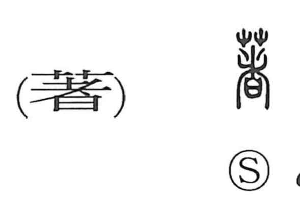

Explanation
Shirakawa reads 著 as a phono-semantic graph with 者 as the sound element. He interprets 者 as depicting an earthen village hedge into which 日—understood here as written charms—were buried at intervals. By implanting these texts, incantatory power was thought to adhere to the hedge and ward off intruders. From this image of attaching or clinging arises the core sense of “to stick, to arrive.” That protective potency then broadens to what stands out as evident—“remarkable, clear”—and from making things manifest it naturally extends to “to set down in writing, to publish.” The character 着 later came to be used as a popular counterpart, and in modern usage it carries practical senses such as “to wear, to put on, to arrive,” while 著 retains the literary range of “remarkable,” “clear,” and “to write/publish.”